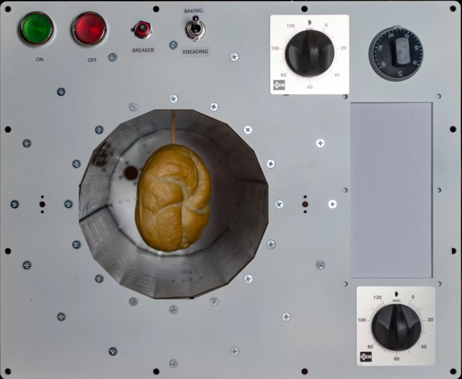

Еда на МКС
ргртшгоошшошошш9 Все знают, что космонавты едят суп из тюбиков и разводят водой сухое картофельное пюре. Главное – чтобы не было крошек и капель, ведь они разлетаются по всей станции и могут попасть в электросеть или тонкие приборы, а это опасно. Именно поэтому у астронавтов долго не было, например, свежего хлеба, обходились галетами из специальной муки, и не из пустых опасений. В 1965 году американские астронавты Вирджил Гриссом и Джон Янг, экипаж миссии Gemini 3, тайком пронесли на борт космического аппарата сэндвич. Крошки летали повсюду и чуть не вызвали короткое замыкание. С тех пор хлебу в космосе сказали «Нет», разрешив только лепешки-тортильи.
Но в 2018 году хлеб появится на МКС. Для этого немецкие инженеры разработали печку, прототип которой уже работает.
Секрет – в специальном тесте, из него получается хлеб, который не дает крошек. Понадобился и особенный дизайн печки: она должна работать от слабой сети, ее мощность не должна превышать 250 ватт (на земных кухнях работают электрические духовки мощностью в 2–5 киловатт, то есть вдесятеро больше). Поверхность приборов, используемых на МКС, не должна быть горячее 45°C, поэтому инженеры используют нетеплопроводные материалы, а внутри печки создают слабый вакуум: так вода закипит при более низкой температуре, и нагревать булочку до обычных 200–250 градусов не придется.